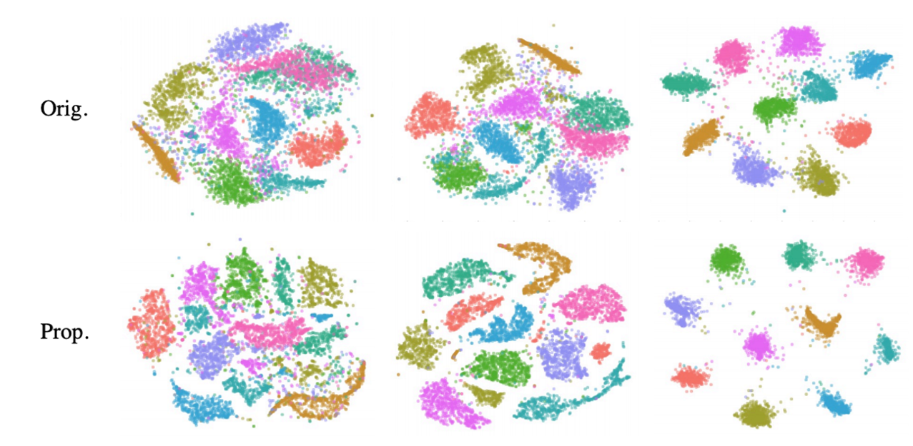
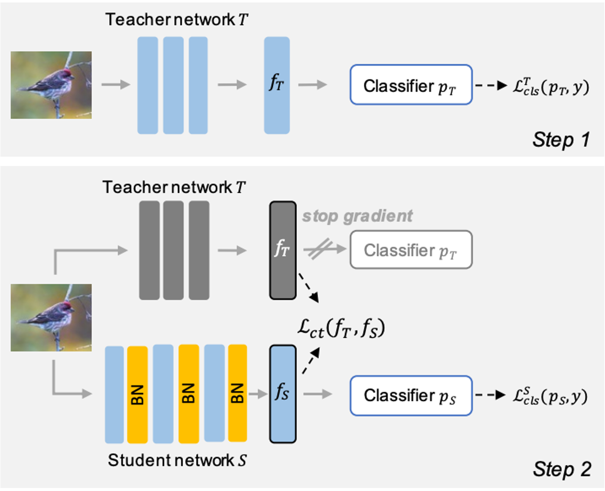

|
I am a Principal Machine Learning Research Scientist at Autodesk AI Research and an Adjunct Research Professor at the School of Computing Science (ranked #1 in Computer Vision in Canada), Simon Fraser University (SFU), Canada. Previously, I explored real-world machine learning and computer vision problems as a research scientist in startup environments. I completed my PhD in Computing Science at SFU under the supervision of Prof. Ghassan Hamarneh. During my PhD I had multiple research visits/internships at different research institutions such as MILA (Montreal, Canada), Siemens Healtheneers (Princeton, USA), and Imagia (Montreal, Canada). Outside of work, I have a strong passion for soccer and running track - the 100m sprint. I've had the privilege of competing and earning a few medals in inter-university competitions in these areas. Email / LinkedIn / Google Scholar / X |

|
|
My research is around developing interpretable and trustworthy (robust, fair, and reliable) machine learning systems that can handle domain shifts and spurious correlations without significant failures. Lately, my work has been focused on foundation models and leveraging language models for interpreting various models, including those related to vision. I am also actively working on addressing copyright and parroting (memorization) issues in large generative models. |
|
|

|
Learned Visual Features to Textual Explanations
Saeid Asgari et al., Reliable and Responsible Foundation Models Workshop, ICLR 2024 |
|
SLiMe: Segment Like Me
Optimzing textual embedings for single-shot object/part segmenation. Aliasghar Khani, Saeid Asgari, Aditya Sanghi, Ali Mahdavi-Amiri, Ghassan Hamarneh, ICLR 2024 |
|
|
|
MaskTune: Mitigating Spurious Correlations by Forcing to Explore
Saeid Asgari*, Aliasghar Khani*, Fereshte Khani*, Ali Gholami*, Linh Tran, Ali Mahdavi-Amiri, Ghassan Hamarneh, NeurIPS 2022 [paper] |

|
Robust Representation Learning via Perceptual Similarity Metrics
Saeid Asgari*, Kristy Choi*, Amir Khasahmadi, Anirudh Goyal, ICML 2021 (Spotlight presentation) [paper] |

|
RobustPointSet: A Dataset for Benchmarking Robustness of Point Cloud Classifiers
Saeid Asgari*, Jieliang Luo*, Ran Zhang, Ye Wang, Pradeep Kumar Jayaraman, Krishna Murthy Jatavallabhula, ICLR 2021, RobustML Workshop [paper] |
|
PointMask: Towards Interpretable and Bias-Resilient Point Cloud Processing
Saeid Asgari , Kaveh Hassani, Pradeep Kumar Jayaraman, Amir Khasahmadi, Tonya Custis, ICML 2020, Human Interpretability in Machine Learning Workshop (Oral presentation) [paper] |
|  |
A Kernelized Manifold Mapping to Diminish the Effect of Adversarial Perturbations
Saeid Asgari , Kumar Abhishek, Shekoofeh Azizi, Ghassan Hamarneh, CVPR 2019 [paper] |

|
InfoMask: Masked Variational Latent Representation to Localize Chest Disease
Saeid Asgari , Mohammad Havaei, Tess Berthier, Francis Dutil, Lisa Di Jorio, Ghassan Hamarneh, Yoshua Bengio, MICCAI 2019 (Early accept) [paper] |
|
|
Improved Inference via Deep Input Transfer
Saeid Asgari , Kumar Abhishek, Ghassan Hamarneh, MICCAI 2019 (Early accept) [paper] |

|
Select, Attend, and Transfer: Light, Learnable Skip Connections
Saeid Asgari , Aicha Bentaieb, Anmol Sharma, S. Kevin Zhou, Yefeng Zheng, Bogdan Georgescu, Puneet Sharma, Sasa Grbic, Zhoubing Xu, Dorin Comaniciu, Ghassan Hamarneh, MICCAI 2019, MLMI Workshop (Oral presentation) [paper] |

|
Vulnerability Analysis of Chest X-Ray Image Classification Against Adversarial Attacks
Saeid Asgari , Arkadeep Das, Ghassan Hamarneh, MICCAI 2018, Understanding and interpreting machine learning in medical image computing applications Workshop (Oral presentation) [paper] |
|
|

|
Deep Semantic Segmentation of Natural and Medical Images: A Review
Saeid Asgari*, Kumar Abhishek*, Joseph Paul Cohen, Julien Cohen-Adad, Ghassan Hamarneh, Artificial Intelligence Review, 2020 (IF=12) [paper] |
|
Combo Loss: Handling Input and Output Imbalance in Multi-Organ Segmentation
Saeid Asgari , Yefeng Zheng, S. Kevin Zhou, Bogdan Georgescu, Puneet Sharma, Daguang Xu, Dorin Comaniciu, Ghassan Hamarneh, Computerized Medical Imaging and Graphics, 2019 (IF= 7.42) [paper] |

|
Segmentation-Free Direct Tumor Volume and Metabolic Activity Estimation from PET Scans
Saeid Asgari , Nouirin Duggan, Hilgan Ma, Anna Celler, Francois Benard, Ghassan Hamarneh, Computerized Medical Imaging and Graphics, 2018 (IF=7.42) [paper] |

|
Pareto-Optimal Multi-Objective Dimensionality Reduction Deep Auto-Encoder for Mammography Classification
Saeid Asgari , Jeremy Kawahara, Ghassan Hamarneh, Computer Methods and Programs in Biomedicine, 2017 (IF=7.10) [paper] |
|
Nonlinear Feature Transformation and GA-based Feature Selection: Improving System Security and Decrease Computational Cost
Saeid Asgari , Ansari M. R., Zamani B., Mousavi S. A., ETRI Journal, 2012 (IF = 2.03) [paper] |
|
|
|  |
Counterbalancing Teacher: Regularizing Batch Normalized Models for Robustness
Saeid Asgari , Ali Gholami, Fereshte Khani, Kristy Choi, Linh Tran, Ran Zhang, Aliasghar Khani, arXiv, 2022 [paper] |
|
Jigsaw-VAE: Towards Balancing Features in Variational Autoencoders
Saeid Asgari , Mohammad Havaei, Alex Lamb, Aditya Sanghi, Ara Danielyan, Tonya Custis, arXiv, 2020 [paper] |

|
Signed Input Regularization
Saeid Asgari , Kumar Abhishek, Ghassan Hamarneh, arXiv, 2019 [paper] |
|
Design template by Jon Barron |